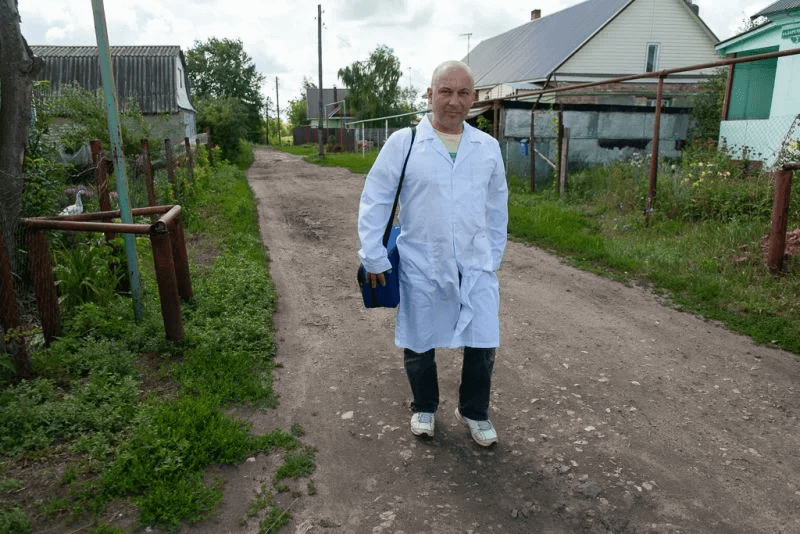
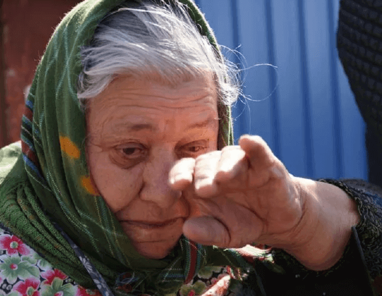
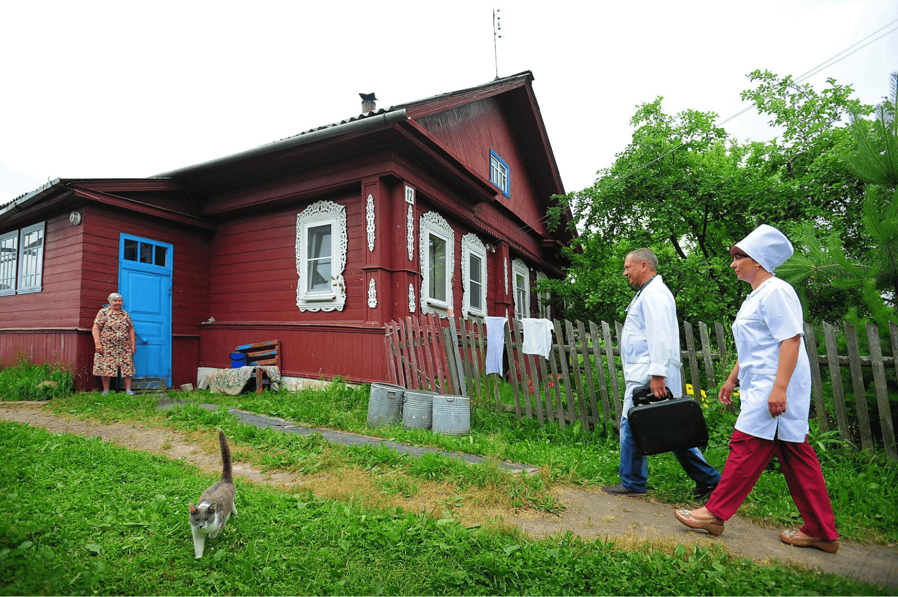
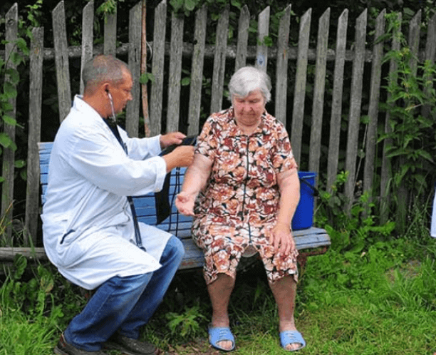
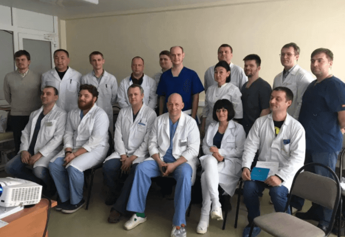
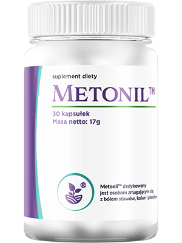

Rewelacyjne odkrycie! Zwykły wiejski sanitariusz znalazł nowy sposób na regenerację stawów i uratował swoją sąsiadkę przed wózkiem inwalidzkim!
Dlaczego sieci apteczne urządzają prawdziwe polowanie na ratownika medycznego i czy można osiągnąć sprawiedliwość, gdy w grę wchodzą duże pieniądze?
Andrzej Popowski jest jednym z tych troskliwych ludzi, którzy są gotowi ryzykować życiem dla zdrowia i dobrego samopoczucia innych.
Po ukończeniu Uniwersytetu Medycznego Andrzej Popowski wrócił do rodzinnej wsi i rozpoczął pracę jako sanitariusz w miejscowym centrum medycznym.
Czym zaszkodził urzędnikom i biznesmenom prosty, wiejski sanitariusz, że rozpoczęli na niego polowanie? Dowiedz się już dziś w naszym specjalnym raporcie.
Agata Potocka zawsze z wielką radością czeka na wizytę Andrzeja, ponieważ dokonał niemożliwego - uratował ją przed wózkiem inwalidzkim!
Andrzej znał Agatę Potocką od dzieciństwa. Zawsze dobrze traktowała chłopca, częstowała go jagodami i jabłkami. Ale wiek zbiera swoje żniwo, stawy zaczęły boleć, trudno było jej chodzić i wykonywać prace domowe. Mąż Agaty Potockiej zmarł 5 lat temu, a jej jedyna córka mieszka we Wrocławiu i co trzy miesiące odwiedza matkę.
Andrzej, jako osoba wrażliwa, opiekował się koleżanką ze wsi, a nawet przebadał ją u najlepszych lekarzy w Warszawie. Werdykt był jednak rozczarowujący – najlepsi medycyny załamali ręce i przepowiedzieli, że będzie żyła na wózku inwalidzkim.
Ale Andrzej się nie poddał! Postanowił pomóc emerytce. I udało mu się! Opierając się na starożytnych, naturalnych recepturach, stworzył kapsułki, które pomogło Agacie Potockiej stanąć na nogi i wrócić do normalnego życia na wsi!
Odwiedziliśmy emerytkę i porozmawialiśmy z nią:
- Agato Potocka, witaj, opowiedz nam o Andrzeju, bo dosłownie wyciągnął cię z wózka inwalidzkiego!
- Tak, moja droga, Andrzejek jest moim zbawicielem! Nie mogłam chodzić, nogi odmówiły mi posłuszeństwa, kolana były spuchnięte, nie mogłam nawet nakarmić kurczaków, o pomoc prosiłam Andrzejka lub moją sąsiadkę Alinę. Prawie nie wstawałam z łóżka. Andrzejek zabrał mnie do Warszawy, żeby mnie zbadać, i tam tylko wzruszyli ramionami, powiedzieli, że czas usiąść na wózku inwalidzkim.
A jak żyć na wózku inwalidzkim na wsi? Nie ma dróg, podjazdów, wszędzie schody i wyboje, przez dom też ciężko przejść... Kto mnie poniesie? Moja córka jest w mieście, ma pracę, rodzinę, mam dorastające troje wnucząt, nie mogę jej przykuć do siebie i pozbawić jej dzieci matki.
Stan Agaty Potockiej szybko się pogarszał. Praktycznie straciła zdolność chodzenia.
A Andrzejek przyniósł kilka kapsułek i mi pomógł! Z każdym dniem stawałam się coraz zdrowsza. Obrzęk ustąpił i mogłam powoli chodzić. Brałam te kapsułki przez dwa tygodnie, a do listopada dotarłam już o własnych siłach do sąsiadki Aliny i musiałam przejść pięć metrów.
Ale Andrzejek kazał dalej brać kapsułki, a ja kontynuowałam. A zimą było już po wszystkim. Nie boli nic, a nic. Chodzę, tak jak chodziłam w młodości. Zajmuję się sprzątaniem, chodzę do sklepu i z powrotem i jest w porządku - 2 km w jedną stronę.
Poszłam na grób dziadka i posprzątałam. Nic się nie martwię, jestem zdrowa jak w młodości. Dziękuję Andrzejkowi każdego dnia, chodzę do kaplicy i się za niego modlę. Bardzo miły facet, zawsze zainteresowany tym, jak się czuję, przychodzi raz w tygodniu, nigdy o mnie nie zapomina.
Andrzejka poznaliśmy w pracy. Jak zawsze pospieszył do swoich pacjentów. Ale udało nam się zadać mu kilka pytań.
- Andrzej, powiedz nam, jak udało ci się postawić Agatę Potocką na nogi? W końcu nawet lekarze z Warszawy odmówili!
- Znam Agatę Potocką od dzieciństwa, zawsze była dla mnie miła i często wpadałem do jej domu. Zawsze cieszyła się, że mnie widzi. Ciężko mi było patrzeć, jak traci zdolność normalnego poruszania się. Nikt jej nie pomoże, mieszka sama. Znalazłem okazję, by zabrać ją do Warszawy, ale tam nam nie pomogli.
Wtedy postanowiłam poszukać alternatywnych sposobów – moja babcia i mama też są lekarkami. W domu trzymaliśmy stare księgi przepisów ludowych na różne choroby, zielarzy, notatki babci w zeszytach. Wcześniej medycyna była głównie medycyną ludową, zwłaszcza na wsi. Te przepisy są sprawdzone w czasie, jako lekarz zrozumiałem, że zdecydowanie nie poszedłbym w inną stronę. A jeśli będziesz mieć szczęście, pomożesz dobrej osobie.
Zacząłem szukać czegoś na temat stawów i znalazłem ciekawe wpisy. W rejonie podlasia popularne są receptury oparte na ekstraktach leczniczych. Są w stanie wzmocnić kości, odbudować tkankę chrzęstną, poprawić krążenie krwi w worku stawowym i przyspieszyć regenerację komórek.
Do leczenia stawów stosuje się kadzidłowiec — składnik o możliwym działaniu przeciwreumatycznym, może łagodzić ból, poprawiać ruchliwość stawów, zmniejszać obrzęk oraz chronić przed utratą tkanki chrzęstnej. Ponadto może wykazywać silne wsparcie w utrzymaniu prawidłowych funkcji serca i układu krążenia.
Ten składnik nie jest tak rzadki w naszej okolicy, dość szybko go znalazłem. Zrobiłem kilka kapsułek i kazałem Agacie Potockiej brać je dwa razy dziennie. Zadzwoniła do mnie tydzień później i powiedziała, że może wstać z łóżka i wyjść na podwórko.
Przyznam, że sam nie spodziewałem się tak wspaniałego wyniku. Ale bardzo się cieszę, że pomogłem Agacie Potockiej.
- A co stało się później? Jak to się stało, że zaczęło się na Ciebie prawdziwe polowanie? Wiemy, że napływają do Ciebie pogróżki, a nawet były próby podpalenia Twojego domu?
- Kiedy zdałem sobie sprawę, że Agata Potocka poczuła się lepiej, poleciłem mój produkt innym osobom z bólami stawów. I pomogło wszystkim! Bardzo mi podziękowali i poprosili, żebym pojechał do Warszawy opatentować remedium.
Chciałem pomóc nie tylko moim sąsiadom, ale także wszystkim ludziom w naszym kraju. W końcu miliony ludzi cierpi z powodu bólu pleców, nóg, ramion, stają się niepełnosprawni i żyją na wózku inwalidzkim, a tak wcale być nie musi.
Zdecydowałem się pojechać do Warszawy. Zostałem dobrze przyjęty, doktorzy nauk, profesorowie, z zainteresowaniem słuchali o moim specyfiku, pytali o skład i wszystko im wykładałem. Powiedzieli, że będą prowadzić badania nad kapsułkami, ale kazali mi poczekać i zapewnili, że wkrótce ponownie zaproszą mnie do Warszawy, żebym opatentował moją formułę.
Ale minęły dwa miesiące, a od nich nie słychać odpowiedzi. Dzwoniłem, ale nie mogłem z nikim rozmawiać.
Aż pewnego dnia przyjechali do mnie goście - przedstawiciele firmy farmaceutycznej w drogich samochodach. Zaoferowali dużo pieniędzy, chcieli kupić moją formułę. Ale odmówiłem, chcę pomagać ludziom, a nie ciąć ich na pieniądze. Dlatego w grzeczny sposób odesłałem ich z powrotem do Warszawy.
A potem przyszli do mnie „panowie w garniturach”. Jak z lat 90-tych. I zagrozili, że mam przemilczeć, że to ja wynalazłem specyfik, bo inaczej mnie zabiją.
Wtedy mnie uderzyło! Warszawscy grabberzy chcą przywłaszczyć sobie moją formułę i zarobić na niej miliony!
Powiedziałem, że to jest moja formuła, wymyśliłem ją i nie pozwolę nikomu jej opatentować. Potem przez telefon zaczęły napływać groźby, zmusili mnie do rezygnacji, obiecali wsadzić do więzienia, a nawet jednej nocy próbowali podpalić mój dom! Ale dzięki Bogu, sąsiedzi zauważyli na czas.
Mimo ciągłych gróźb Andrzej nadal pracuje i pomaga swoim pacjentom, którzy nie mają nikogo innego.
- Pomyśl! Prawdziwa mafia!
- Tak, dokładnie. Są tam w swojej stolicy najwyraźniej przyzwyczajeni do rozwiązywania spraw takimi metodami. Jestem dla nich tylko wiejskim sanitariuszem, tylko robakiem, którego można usunąć z drogi i zarobić miliardy na moim odkryciu.
A może nawet chcą sprzedać formułę za granicę i nasi obywatele nigdy nie zobaczą mojego lekarstwa, ale Amerykanie będą mogli zregenerować swoje stawy i być zdrowi i szczęśliwi.
Nie mogłem do tego dopuścić! Dlatego postanowiłem szukać prawdy i ponownie udałem się do Warszawy. Cała wieś nawet zebrała dla mnie pieniądze na podróż, bo moja pensja nie wystarcza na podróżowanie tam i z powrotem tak często.
Poszedłem szukać wsparcia. Podróżowałem po wielu instytutach naukowych, poznałem wielu profesorów i badaczy. I miałem szczęście! Spotkałem ludzi, którzy weszli w moją skórę i dla których nie pieniądze są najważniejsze, ale zdrowie ludzi! To są lekarze z powołania, dla których przysięga Hipokratesa nie jest tylko formułką!
Grupa naukowców z Instytutu Badawczego, która pracowała nad stworzeniem kapsułek , opartych na formule wymyślonej przez Andrzeja Popowskiego.
Pomogli mi opatentować formułę i przy wsparciu Instytutu Badawczego Reumatologii wypuściliśmy specyfik oparty na mojej formule. Został nazwany . Ma te same główne składniki - kadzidłowiec, kwas hialuronowy, hydrolizat kolagenu, cynk i szereg innych składników pomocniczych.
Mój wynalazek pomyślnie przeszedł wszystkie testy, kontrole bezpieczeństwa i wykazał niesamowite rezultaty!
- 99% pacjentów całkowicie pozbyło się bólu i stanów zapalnych stawów.
- 98% pacjentów odzyskało ruchomość stawów.
- 100% zadowolonych z efektu i gotowych polecić swojej rodzinie i przyjaciołom.
Ludzie pozbyli się chorób takich jak zapalenie stawów, artroza, zapalenie wielostawowe, osteochondroza, osteoporoza, dna moczanowa i inne poważne choroby, które w większości przypadków prowadzą do niepełnosprawności. Bardzo się cieszę, że moje kapsułki w końcu ujrzały światło dzienne i stały się dostępne dla ludzi.
- A można go już kupić w aptece?
- Niestety nie. Chciwi farmaceuci nie chcą sprzedawać za taką cenę, jaką chcemy. Chcą go sprzedać za 200 zł lub więcej. A to przekracza możliwości wielu Polaków, nie mówiąc już o emerytach mieszkających na wsiach.
Ale znaleźliśmy sposób, aby każdy mógł otrzymać po obniżonej cenie. Tak, dobrze słyszałeś, jeśli masz szczęście, możesz kupić taniej!
- Jak to zrobić?
- Wystarczy mieszkać w Polsce. jest wysyłany bezpośrednio z magazynu i dostarczany kurierem na podany adres. Ale haczyk polega na tym, że wiele osób ma bóle stawów, a specyfik jest nadal produkowany w ograniczonych ilościach, ponieważ projekt jest finansowany przez państwo, a nie komercyjnie.
Dlatego realizacja funduszy odbywa się za pośrednictwem oficjalnej
strony internetowej, na której każdy może wziąć udział i uzyskać
zniżkę. Nie trzeba zbierać żadnych dokumentów.
Wypełnij formularz.
Następnie specjalista skontaktuje się z Tobą w celu ustalenia
szczegółów dotyczących dostawy.
Nie przegap tej wyjątkowej okazji! Przywróć zdrowie swoim stawom i wróć do aktywnego, zdrowego życia z nowymi, skutecznymi kapsułkami !
Dodano
:
Teraz popyt na produkt jest niespotykanie wysoki. Z tego powodu
zostaliśmy zmuszeni do tymczasowego ograniczenia akcji. Możesz zamówić
do
włącznie. Śpiesz się!
Komentarze: